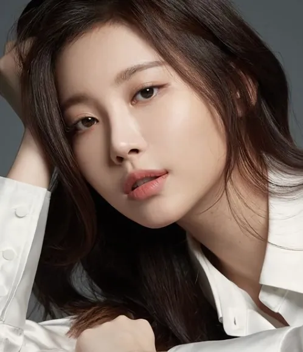

- HTML
- CSS
- javaScript
javaScript
안녕하세요 박민규입니다.

아직 보컬라인에 비해서는 좀 부족하지만 본인 파트는 소화해낸다. 또한 2014년 가요대제전에서 민아가 불참했을 때도 민아 파트를 소진, 혜리와 함께 잘 소화해냈다. 그 외에도 본인의 실력을 보여준 적은 없지만 특유의 부드러움에서 나오는 여성스러운 음색이 유라의 강점 중 하나. 또 2017년에 발매한 에서는 유라 역시 실력이 많이 늘었고, 수록곡에서는 가성과 고음 처리를 깔끔하게 소화해냈다.
<잘해줘봐야> 활동 당시 새로운 멤버로 영입된 이후 서브보컬로 활동했으나, <반짝반짝>에서부터는 랩 파트를 맡고 있다. 일단 랩 실력은 前 멤버인 지해보다는 떨어진다는 평이 있으나 목소리가 독특하고 귀에 쏙쏙 들어와 노력만 하면 괜찮은 아이돌래퍼가 될 수 있을 것 같다는 의견이 많다. 실제로 걸그룹 래퍼들 사이에서 레드오션인 보이시하고 터프한 분위기의 랩과는 달리 카라의 니콜처럼 발랄하고 통통 튀면서 여성스러운 멜로디컬한 랩을 구사한다는 것은 확실히 다른 걸그룹 래퍼들과는 다른 차이점이다.
댄스 포지션은 메인댄서. 아직 춤 실력을 보여준 적은 없지만 긴 팔다리와 굴곡진 몸매에서 나오는 춤선이 예쁘다는 평이 있다.
dasdas